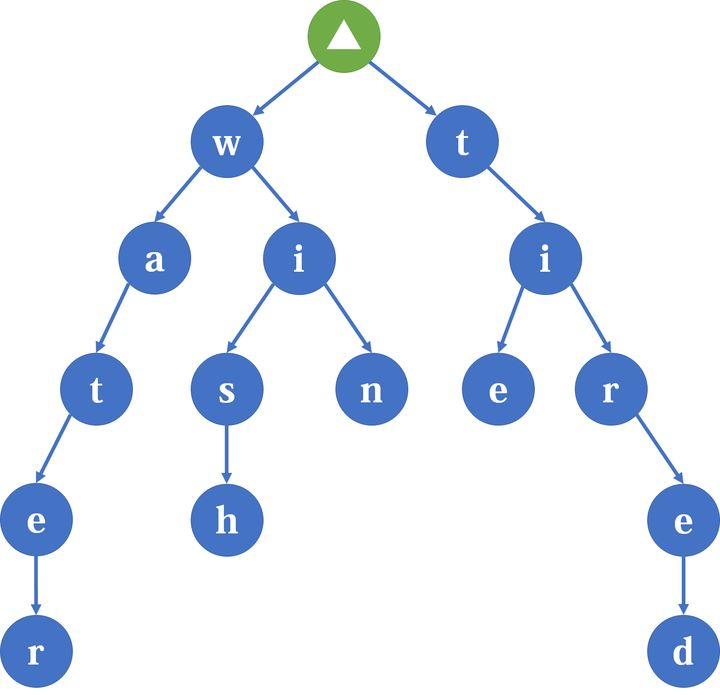

本文最后更新于：2021年10月30日 凌晨
Trie树
简介
Trie树(又称前缀树)是一种用来解决多字符串、前缀、匹配的数据结构。
其核心思想是利用字符串之间的相同部分来加速检索的过程。
例如，water，wish，win，tie，tired这几个单词可以用以下方式存储：

可以发现，字符串的大部分信息都是靠边来维护的，节点只起到辅助作用。
同时，这还是一种以空间换时间的数据结构。
通过消耗 字符串最大长度 $\times$ 26 的空间， 来达到 $\mathcal{O(|S|_{max})}$ 的查询。
可以发现，查找的复杂度与数据规模无关，只与字符串长度有关。
实现
1
2
3
4
5
6
7
8
9
10
11
12
13
14
15
16
17
18
19
20
21
22
23
24
25
26
27
28
29
30
31
32
| struct Trie
{
static const int maxn = 5e5+100;
int nxt[maxn][26],cnt = 1;
void init()
{
memset(nxt,0,sizeof(nxt));
cnt = 1;
}
void insert(const string& s)
{
int cur = 1;
for(auto c:s)
{
if(!nxt[cur][c-'a'])
nxt[cur][c-'a'] = ++cnt;
cur = nxt[cur][c-'a'];
}
}
bool findPrefix(const string& s)
{
int cur = 1;
for(auto c:s)
{
if(!nxt[cur][c-'a'])
return false;
cur = nxt[cur][c-'a'];
}
return true;
}
}
|
例题
这里放一道裸题L语言
本题大意是给定 $n$ 个原串，求每个询问的串能由原串组成的最长前缀。
解法很简单，就是在Trie树上循环匹配，同时使用哈希表记录已知答案(推一波__gnu_pbds::gp_hash_table)。
PBDS!!!
既然提到了pbds，那就提一嘴它吧！。
定义
| #include<ext/pb_ds/assoc_container.hpp>
#include<ext/pb_ds/trie_policy.hpp>
using namespace __gnu_pbds;
using namespace std;
typedef trie<string,null_type> tre;
tre tr;
|
方法
| tr.insert(s);
tr.erase(s);
tr.join(oth);
tr.prefix_range(s);
|
参考文献